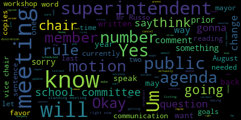
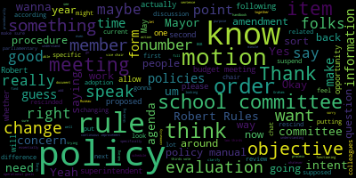

[j0qza4ZNB3E_SPEAKER_18]: Hi, everyone. Hi. Hello.
[RhUNhYl62Oo_SPEAKER_05]: Good evening, everybody.
[Lungo-Koehn]: Okay, I think we have everybody except me.
[e2JGoC251eM_SPEAKER_06]: We'll be a few minutes late, so great. It's 4.03. We have a school committee meeting. Today, February 3rd, 2022, there'll be a Committee of the Whole meeting on Thursday, February 3rd, 2022, from four to 6 p.m. or earlier, if we get things done, held remotely on Zoom. The purpose of the meeting is to discuss, edit, and approve the draft of the school committee rules packet proposed by member Rousseau. Metro Public Schools is inviting you to schedule Zoom. You can also call in by dialing in 1-929-205-6099 please enter meeting ID 99484267944 when prompted. The agenda is, the purpose of the meeting is to discuss, edit and approve the draft of the school committee rules document proposed by member Rousseau. Thank you all for being here. I know we have a full set of rules. Yep, member Rousseau.
[Ruseau]: Thank you, would you like me to take attendance?
[e2JGoC251eM_SPEAKER_06]: Yes, roll call please.
[Ruseau]: Thank you. Member Graham? I see her. Member Hays?
[Lungo-Koehn]: Present.
[Ruseau]: Member Kreatz?
[Lungo-Koehn]: Here.
[Ruseau]: Member McLaughlin?
[Lungo-Koehn]: Here.
[Ruseau]: Member Mustone? Not yet. Member Sohir? Mayor Wendell Kern?
[e2JGoC251eM_SPEAKER_06]: Present. Six present, one absent. Um, we could decide how we want to go through this. Do we want to go through, um, the first 10 rules on page two? See if there's any questions or concerns. And I mean, I can start, I can start.
[Kreatz]: I'm in favor of doing that way.
[e2JGoC251eM_SPEAKER_06]: Okay. A question from the chair then on rule rule number two. where we wouldn't need a caucus like this past January, that would be just my question on number two. So maybe we can just make it so a caucus is optional, obviously, if you have to hammer things out. But where we had a pretty in agreement and went right to the floor, I just wanted to point that out. Member Ruseau?
[Ruseau]: Yes, it says actually after each biennial election. So it's actually only every two years.
[e2JGoC251eM_SPEAKER_06]: but it would be after the biennial election, which was this year, and we didn't caucus.
[Ruseau]: Yes, we did. How did we elect myself and vice chair? That was our caucus.
[e2JGoC251eM_SPEAKER_06]: Okay, we caucused during the, okay, I'm used to the city council where we would caucus at like 6.40, 6.30, and then go on the floor and make it public. Madam Mayor.
[Ruseau]: Yeah, actually, I think we might've done that the last time, sort of like a baby committee of the whole or something. And I don't really have a strong preference for either method that we did. My first two terms, I think we actually did have a little meeting before the regular meeting. I didn't find it to be difficult to just include it as an agenda item in our regular meeting. I don't have strong preference, but I certainly agree it should only be every two years.
[McLaughlin]: Mayor. Thank you. I have a question that I'd like to start with before we really go into the specific rules. And I guess I wanna know the difference between or what we're defining is the difference between the rules and the policies, because I know that even around this question of caucus, we have a policy on our policy, which should be a handbook, frankly, but isn't. According to our policy, we're supposed to have a handbook that's available in the superintendent's office and also that's shared with each of us. So what I'm doing now is putting it together in a Google Doc that can be searchable. And we can look at that in the Google Doc if folks want, but I think even to this point, there's something in the policy about, and we haven't been doing it, but there's something in the policy about you know, electing the chair and the vice chair and how, and how that process occurs with, it doesn't, I don't think it says caucus specifically, but I can look, I can do a find right now if people are interested in hearing what it says in our policies. And so I guess backing it up a little bit, I'm trying to understand what's the difference between the proposed rules and our current policy, and are we, are rules superseding the policy, in which case, I'm curious about that too, because we have a policy about how to change policy. So it's like, it's just, it's a lot. So I am, you know, again, I sent you guys a link to the document for policy and also to the proposed rules. So we can do a find if we need to, but I just wanna make sure that we're all clear on what we're doing. Please, thank you.
[Lungo-Koehn]: Mr. Attorney Greenspan.
[SPEAKER_01]: Thank you, Mayor. Just on that point, you have an online policy manual that's online at the MASC. And a lot of these policies that are in front of us tonight are consistent with the online manual. There are a couple that aren't. So I think you do have to make clear whether when you accept this document as a whole, if you're overriding the online policy manual, just for example, on one quickly is that on this number nine, it has school committee meetings will be held on the first and third Monday at 6 p.m. And on the policy manual, which is capital B, capital E, it says 7 p.m. So there are a few of those things that you just have to make clear that if it's inconsistent with your online manual, that this is going to be what you're going to use going forward.
[McLaughlin]: But if I may, Mayor. Yes, just procedurally to, and I don't know this is probably for Howard as well or procedurally the manual has like a procedure in place for how to change policy so that's the question are we like. And I think there's a way that you waive the rights to change policy. We have to look at the policy manual again in order to do this. But I think that it says that we have to place on the agenda a policy change. The policy has to be discussed. And then the next meeting, the policy can be changed. And again, that's in the the online policy manual. So I don't, I guess I'm trying to back up to like what's rules, what's policy, how are we differentiating? If we can sort of maybe get to that, that would be really helpful. Thank you.
[Kreatz]: Yeah, so I was actually going to bring up number nine, because last year, Paulette and I we put forth a resolution to change the start times of the meetings to 630. And because we had received feedback from the public. last school year um that they preferred to start at 7 p.m and we had gotten we we had started at just different times like we were starting at 5 sometimes 6 sometimes 6 30 so we as a group um accepted the resolution and chose 6 30 you know as a happy medium for the public administrators etc um so i mean if You know, I guess like, how does everybody else feel about that start time? You know, could we try it at six and we might have to change this rule if it's not working out for the community, you know, to make it to the meetings.
[Graham]: Member Graham and then member Ruseau. Thank you, so I think anytime you make a change like this you first have to agree on like. What the new thing will be, and then you have to go back and true up. You know where else you might have documentation so from my perspective rules are things that govern this body. Policies are things that the superintendent must carry out as she runs the district so to me this document is about how we will operate as a school committee of which the superintendent is not a member of the school committee policies are policies that. the superintendent is expected to carry out. So frankly, we've never had a rules document. So we threw rules in our policies, which was the incorrect step in my opinion, way back when. So I think the first thing we need to do is talk about these rules as they are presented to us. And then if we agree that this is the right set of rules, then somebody needs to go through the policies and put motions on the floor to remove the policies. But I don't think it's even worth talking about removing a policy if we haven't agreed what a new policy is. So I would propose we go through this document, we agree on how we believe that this body should operate, and then there needs to be an effort to go back to the policy manual and identify those places where there's conflict and they get simply removed. I would like to see us move through this document without delay, because I do think it's important. Clearly, we've been mishmashing these things together and causing confusion for a really long time, so.
[e2JGoC251eM_SPEAKER_06]: Member Ruseau, then Member McLaughlin.
[Ruseau]: Thank you. Since member Kreatz mentioned that we had agreed to 630, so I'd like to make a motion to amend Um, rule nine and to strike 6 30 PM and make it six strike 6 PM and make it 6 30 PM.
[Kreatz]: Okay.
[e2JGoC251eM_SPEAKER_06]: Do you want, we can vote on them one at a time, I guess, to make it clear in the record. motion for approval by members.
[McLaughlin]: Point of information, Mayor, sorry. I want to get this done, too, and I think it's really important that we do have rules. I guess my point of information is, and I appreciate through the Chairmember Graham's explanation of the perception of the difference between rules and policy, and I see it the same. Rules, you know, policy is what is know rules are you know intent of what the school what governs the school committee policy is how that intent is carried out and there are some issues in the rules document that are being proposed that are affecting our policy which is what member graham was saying that somebody has to go back and true up the policy manual if the rules change it but what i'm saying is is there not a fundamental sort of issue around changing policy through rules. Is everybody following me? Am I making sense? I don't know if I am. We have policy manuals that some of the rules, not all of them certainly, some of the rules change what's in the policy manual. I guess we have to know when is the rule changing the policy manual. in, you know, how that happens. So, I mean, I'm happy to do like an edit when we're, a find when we're looking at different rules to see if there's something in our policy on them and let folks know what's in the current policy, if that's helpful.
[e2JGoC251eM_SPEAKER_06]: Great.
[Graham]: Member Graham. I would recommend that we talk about that as it applies to a specific rule instead of hypothetically, because hypothetically speaking, we could run around this circle all day long. And I think if we have a rule and there is a policy that's in conflict, we should talk about it and we should identify what to do about it. But I think we should just, I think we just need to start at the top and work our way through this list. And if there are those conflicts, we just need to identify them. as they come up. And if this is not perfect, it's fine because we can change a rule at any point in time going forward. This is not like something we need to sign in blood. So I think we should do our level best to get through this. do our level best to clean up the policies because frankly, no one's done that in like 20, 30 years. So all the efforts are welcome because I think they all create a better function. And if we find something in a week, we just need to deal with it in a week. And I think it's all gonna be okay.
[e2JGoC251eM_SPEAKER_06]: Okay, and there's a motion on the floor to change Number nine from 6 to 6 30 by member Ruseau, seconded by member Kreatz. If we could have a roll call, please.
[Lungo-Koehn]: Yes. Member Hays? Yes. Member Kreatz? Yes. Member McLaughlin?
[McLaughlin]: Abstain.
[Ruseau]: I just really think- Member Mustone? Okay. Member Ruseau? Yes. Mayor Lungo-Koehn?
[e2JGoC251eM_SPEAKER_06]: Yes, five in the affirmative, one abstain, one absent. And then member Glock, motion passes for the change to number nine. And then member McLaughlin, did you wanna speak? Okay.
[RhUNhYl62Oo_SPEAKER_05]: Mayor?
[e2JGoC251eM_SPEAKER_06]: Member Ruseau, we're on to number 11. Actually, I...
[Ruseau]: I thought we were still on number one or two, but everybody gets their one through 10 comments, so I'm sorry.
[e2JGoC251eM_SPEAKER_06]: Go ahead. Yeah, we're starting with one through 10, so you can ask.
[Ruseau]: Thank you. Also on number nine, I would like to remove, add after June, pursuant to policy BE-meetings, since that's not there and there is a policy.
[Lungo-Koehn]: motion by member Rousseau, seconded by second member Graham roll call. Member Graham? Yes. Member Hays? Yes. Member Kreatz? Yes, did you hear me? Oh, sorry. Yeah, I had it.
[Ruseau]: Member Mustone. Member Mustone is not here yet, I don't think. Member Ruseau, yes. Mayor Lundgren.
[e2JGoC251eM_SPEAKER_06]: Yes, five in the affirmative, one abstain, one absent. Motion passes. If there's no further questions on one through 10, we're gonna move to 11 through 20. Attorney Greenspan.
[SPEAKER_01]: Hey, thank you. Just on 11. The remote technology piece. The current legislation for that expires in April. There's a bill pending. I believe in the house that would extend that to July. But all depending on the state of those emergency amendments to the open meeting law. Remote technology is only available if allowed by statute. Prior to COVID, there were remote meeting participation regulations promulgated by the attorney general's office, but you still needed a quorum in person. So my only comment on the remote technology is that it's gotta be consistent with the requirements of the open meeting law.
[e2JGoC251eM_SPEAKER_06]: We can add that language in at the end, consistent with the requirements of open meeting law. Member Ruseau, Kreatz, and then Graham.
[Ruseau]: Actually it was last, but.
[e2JGoC251eM_SPEAKER_06]: I'm sorry, I thought that's how the hands went up, sorry.
[Ruseau]: That's okay. Mr. Greenspan, so if we add simply, you know, as allowed by law, that would be fine? Yes. So I make a motion to amend number 11 to include as allowed by law.
[Lungo-Koehn]: Excuse me.
[e2JGoC251eM_SPEAKER_06]: And is it optional in August? Did we meet in August the last two years? Should we make this optional? Sorry, member Kreatz and then member Graham.
[Kreatz]: Yep, so I'm not ready to vote on this yet. I didn't get to speak on it yet. I did have concerns about the meeting in August. I'm not in favor of having a meeting in August. We haven't had meeting in August and I've been on school committee for six years. Last year and the year before during COVID, we got an email from the superintendent with an update. And that went very well. And so I would like to make a friendly amendment to have an email communication from the superintendent with an update. And if members have questions or concerns, they could speak directly with the superintendent during the summer over the phone if they have any questions or concerns. So I'm making a motion to amend this to, there will be, the superintendent will send out a broadcast communication to the committee members in August, maybe the first Monday. And I think what she was doing actually, I'm sorry, she was sending out updates every week. So let me just get back to what I was saying. So I'm making a motion to amend this to say the superintendent will send out a broadcast communication to all members, a brief broadcast memo to all members each week in August. It doesn't have to be on a Monday, maybe on the Friday at the end of the week.
[McLaughlin]: Second. Oh, it has to be an amendment, right? We have to accept the amendment first for the motion.
[Lungo-Koehn]: Or reject.
[e2JGoC251eM_SPEAKER_06]: Let me just collect myself, because we have one motion on the floor to amend the language. And now it's to... I'm gonna let member Graham speak, and then member McLaughlin, then member Ruseau.
[Graham]: I am in favor of having a meeting in the month of August. I think it's really completely reasonable to expect a body that is responsible for the schools in our district to meet before the start of school. So it doesn't have to be a long meeting. I like that it could be remote to the extent that that remains an option, but I am in favor of an August meeting.
[e2JGoC251eM_SPEAKER_06]: Member McLaughlin, Member Ruseau, then Attorney Greenspan.
[McLaughlin]: I'll pass. I'm waiting for another item, but I would be fine with Zoom if folks were fine with that for the August meeting.
[e2JGoC251eM_SPEAKER_06]: Zoom might not be an option because it's only allowed through April. It may get extended through July. Otherwise, it'll be a violation of open meeting law if the legislature doesn't extend our ability to do so. member Ruseau, then Attorney Greenspan.
[Ruseau]: Thank you. Yes, you know, this is my first three years. We did not have any meetings in July or August, and I greatly appreciated it. It's an understatement. And then my fourth year was COVID all summer. Maybe it's my first two years where no meetings and then COVID summer. But this particular last August, I mean, I don't know if you all don't get the same emails I get, but I got asked by an awful lot of people about a lot of things related to school opening, not just related to the pandemic. And there was no place to have a presentation of the opening plan. A school committee meeting this particular August, I felt like, frankly, it was kind of crazy we didn't do one. There was just so much concern and questions in the community and between us. And, you know, the superintendent can either respond to seven of us individually, which I'm sure doesn't take a lot of time, or just to the whole body at once with an audience. I found it really difficult that we really didn't, I personally don't reach out to the administration to expect them to do any work since They shouldn't do any work unless the body has asked them to. So I went into the first of the school year with the same information as any other parent who got it out of MPS. And I will say that it felt like there wasn't enough, not that the administration wasn't doing enough, but that there was not enough information. And so I also want to say that, you know, I wrote this particular rule. I am also, cognizant of the fact that I don't want the whole school committee to have to not take summer vacations or do whatever else you might do with your time in the summer. That's sort of why this whole rule in when I wrote it is predicated on remote technology. Um, and, um, you know, if the legislature fails to pass anything, I would probably motion to, uh, bring it to the school committee to strike it entirely because, um, or to perhaps substitute it with something. Um, that's legal. It doesn't require us to meet as a body, but, um, um, you know, I, I, I think considering the demands on the, this, this body, I mean, I think. having to figure out how to work your school, your summer plans around a meeting that hopefully will be a short meeting is too much in my mind. So I just wanted to get out that information on the intent.
[e2JGoC251eM_SPEAKER_06]: Attorney Greenspan.
[SPEAKER_01]: Thank you, mayor. I just wanted to go back to what member Graham and McLaughlin said at the beginning. you have a current policy, capital B, capital E, which has meetings from September to June and does not include July and August. So this is one of those that would conflict with the current policy manual to include a meeting in August. So I don't know how you wanna handle those conflicts, but this is one of them.
[e2JGoC251eM_SPEAKER_06]: Could we just put it as optional? And then any one of us can say we think we need it. And obviously communications come all through the summer from the administration. Where during COVID, summer with COVID, we met multiple times on different things, but.
[McLaughlin]: May I offer a point of information, please? Point of information, member McLaughlin. Yeah. And again, just going back to the policy concern for changing policy, and I hate to be a stickler, but I really do feel like if we're going to follow policy and rules, then we have to follow the policy and rules, or we have to figure out what the way is to remove the policy, you know, to put in the rule or whatever. And right now, in addition to the policy that this is related to, there's also a policy in our handbook that says in order to change anything in our policy, we have to have the specific policy on our agenda, have a discussion about it and then change it in the next session so that the community can be aware of what the policy change actually is.
[e2JGoC251eM_SPEAKER_06]: Attorney Greenspan, I mean, can you maybe comment on the chicken and the egg, the egg of the chicken, like how we fix this problem?
[SPEAKER_01]: I haven't reviewed the, I just don't have in front of me the policy that says what you have to do to change it. But I think otherwise then whatever policies can be adopted here would be the policies of the committee and would overrule or override any contradictory policies in the manual. If these are the policies you want to adopt.
[e2JGoC251eM_SPEAKER_06]: These are our school committee rules and they would overrule anything in it. And if it's a policy we've written, then maybe the rules subcommittee can go through those to amend them accordingly to coincide with the rules. Hopefully we'll get through tonight. Okay. Member Graham.
[Graham]: If I'm correct, Even if we voted to approve this document tonight, they would not be adopted until this also goes to the floor for a regular meeting so my suggestion would just be that. that not happen until we also put on our agenda, whatever the next agenda is that we can put it on, the things that need to be struck from the policy handbook, like policy BE, like motion to rescind policy BE, and then it can have a week of waiting and be adopted. I think it is literally as simple as that and we should not make it more complicated.
[Burke]: I think that sounds great.
[e2JGoC251eM_SPEAKER_06]: Okay, so we have conflicting motions on the floor. Is there an optional member of Rousseau?
[Ruseau]: Sorry, my hand was up. Can I just wanna add, you know, we're 32 minutes into this. We agreed earlier how we were gonna proceed. I was hoping maybe the members could agree that since we've agreed how we will proceed, that we will proceed the way we agreed. Because this is going to take 12 hours if we continue to discuss whether we should be discussing this. And I have to admit, I'm not particularly pleased with the progress we're making, and we aren't talking about the rules.
[e2JGoC251eM_SPEAKER_06]: I'm trying to get focused back to the rules.
[Ruseau]: Would you like me to do the roll call on these?
[e2JGoC251eM_SPEAKER_06]: We have two conflicting motions on the floor. I'm trying to create a middle ground as an optional meeting with notices from the superintendent and her team throughout the summer as a way to compromise rather than a definite meeting in August. What if we need a meeting in July? An optional meeting in the summer with notices on anything pertinent that the school committee knows from the superintendent and her team throughout the summer. Member McLaughlin.
[McLaughlin]: Thank you. I found the policy thing. I just wanted to read it. It's BGB policy adoption. So adoption of new policies or changing existing policy is solely the responsibility of the school committee. I can put it in the chat if people want. Policies will be adopted and amended only by the affirmative vote of a majority of the members of the school committee when such action has been scheduled on the agenda of a regular special meeting. So again, to member Graham's point, to permit time for study of all policies or amendments to policies and to provide an opportunity for interested parties to react, Proposed policies or amendments will be presented as an agenda item to the committee in the following sequence. One, information item, distribution with agenda. Two, discussion item, first reading of proposed policy or policies, response from superintendent, report from any advisory committee.
[Ruseau]: What information?
[e2JGoC251eM_SPEAKER_06]: What information, member Rousseau?
[Ruseau]: Since I don't see the policy myself, I'm just curious how long this is. I mean, some of these policies are many pages long. That's why I was like- Yeah, no, no, no.
[McLaughlin]: It's not long, but I'm happy. I'm gonna put it in the chat here. Oh, I think I'm gonna put it in the chat.
[e2JGoC251eM_SPEAKER_06]: And that's a policy that we're gonna change once we go through these rules anyway, because the rules will supersede. So before we vote on them on the floor on a school committee evening at six, 6.30, we'll have a team to go through and make sure they coincide. So maybe we should put that in the chat and then we can move on to, do we want to have it say an optional meeting in the summer with notices from the superintendent or team? Is everybody comfortable with that? Because the two motions are in conflict. Either we don't have a meeting or we have one. Member Ruseau?
[Ruseau]: Thank you. We can't be discussing a third option when we have two amendments on the floor. We have to vote the last, the second amendment is the last one we can be discussing. I mean, it can't go three amendments deep, Mayor, I'm sorry.
[e2JGoC251eM_SPEAKER_06]: I think we can discuss a middle ground. I just need to hear if that's amenable to member Cress who made her motion and member,
[Ruseau]: I think it was, um, uh, yeah.
[Kreatz]: Um, so I I'm, I'm not in favor of having a summer meeting. Um, you know, I still want to keep my motion on the floor to having, um, communication brought, you know, updates. You know, I think at any point, an emergency meeting can be called, you know, if we had to. So I'm still gonna keep my amendment as is. Okay.
[e2JGoC251eM_SPEAKER_06]: So that was amended by Member Kreatz and seconded by Member McLaughlin at the time to have him just strike that line. So roll call.
[Ruseau]: Member, so this is the, to strike it or to replace it with a superintendent will send out a broadcast memo to all members each week in August. Yes, to amend it.
[Lungo-Koehn]: Member Graham? No. Member Hays? No. Member Kreatz? Yes. Member McLaughlin? Yes. Member Mustone? Yes.
[Ruseau]: that number 11 is amended. Uh, member is so, um. No. That mayor. Okay?
[e2JGoC251eM_SPEAKER_06]: Yes for in the affirmative three in the negative. Um that number 11 is amended. Man. Member of
[Ruseau]: I don't know procedurally, well, actually there was no second to the as allowed by law. So does the first amendment just die and we don't, I don't know how to dispose of it, that's why.
[e2JGoC251eM_SPEAKER_06]: It contradicts it, so I would rule that it died.
[Ruseau]: Actually, that's my motion, so I'll just withdraw it.
[e2JGoC251eM_SPEAKER_06]: Okay, thank you. Number 12. is different than what we do now. Usually if we have a Monday holiday, we would have a meeting on the following Monday. So this reads that it would be on the Wednesday, which I guess I just want to point out because it's much different than we operate now. But other than that, any other questions on 1 through 20?
[Kreatz]: I felt the same way, Mayor, and I actually had the same feedback written down that you just mentioned. So I wanted to hear from the rest of the committee.
[e2JGoC251eM_SPEAKER_06]: Sorry, Dr. Edward-Vincent?
[Edouard-Vincent]: Yeah. Mayor, I would like to say if we have the meeting on a Wednesday and the Monday is a holiday, that means we would have to post the Friday before the Monday. you know, as it is trying to do Thursday for a Monday, there were so many, uh, just the timing with the 48 hours. Um, I, I would, you know, kindly request that it could be the following Monday or, um, but the Wednesday after a Monday, it puts us to the Friday before. And, um, I just think it, it, it, it could potentially be a problem for us. I prefer knowing that Mondays are exclusively reserved for school committee meetings or other meetings that we have for the most part, because some of our regular meetings can be quite lengthy, and that would be my recommendation.
[Kreatz]: I motion to change it to the following Monday.
[e2JGoC251eM_SPEAKER_06]: Second. Somebody remember Ruseau and then it's actually I remember pets. That was your comment. And then it's actually McLaughlin and Russo. I have the order and I found a way to find the order. Member McLaughlin.
[McLaughlin]: Thank you. Actually, I'm waiting for item 20 before we move on. So I just, you had asked if there was any other items on this 10 to 20. So I'll wait. Thank you.
[Ruseau]: Okay. Member Ruseau. Thank you. Can I ask members to use the exact words that you want added changed the exact words. It feels like members are saying something and then the next time and they repeat it it's different than the third time they repeat it, it's different. The exact words matter, because those have to be words that are written into this document, and I don't want to be accused of making it up off of what I thought you might have meant. When we make motions and amendments and resolutions, every word as it is expected to be written has to be precisely given by the members. And it's just a constant problem that we have. And I know that's not on the agenda tonight, but as I try to keep up, I wanna know what words you want.
[e2JGoC251eM_SPEAKER_06]: Yep, you would strike the whole second line into the third line. So it would read meeting dates that coincide with non-school days according to the approved academic calendar will be moved to the following Monday.
[Ruseau]: And then the rest of it is gone.
[e2JGoC251eM_SPEAKER_06]: Correct.
[Ruseau]: Thank you.
[e2JGoC251eM_SPEAKER_06]: Motion on the floor by Member Kreatz, seconded by Member Graham. Roll call, please.
[Ruseau]: Sorry, Member Graham.
[Lungo-Koehn]: Yes. Member Hays. Yes. Member Kreatz. I'm correct. Oh, yes.
[Ruseau]: Can you hear me? Yes. Member McLaughlin?
[Lungo-Koehn]: Yes.
[Ruseau]: Member Mustone? Yes. Member Ruseau? Yes. And Mayor Wangokirik?
[e2JGoC251eM_SPEAKER_06]: Yes. Seven in the affirmative, zero in the negative. The motion for number 12 has been approved. Number 13, it seems that we already follow that practice. Number 14, I just have a question on what if the admin, somebody was sick or unavailable for important reasons and had to cancel a meeting? I don't see it happening often, but I don't wanna, I just wanna point that out. Member Kreatz and then member Ruseau.
[Kreatz]: Okay, um, yeah, so I was, I just want to get back to a kind of loss. Okay, here it is. All right. Yep. So when I was reading this rule, I was just thinking back to earlier this month, the January 3 meeting was postponed until the 10th. And, you know, I just found out, you know, just by getting the, the change date, zoom, um, you know, meeting request. Um, so I I'm not familiar with the current process. Um, you know, how was it handled? So. You know, I don't think, you know, we've officially had a process to postpone it and it's been at the discretion of the superintendent. Um, And I'm wondering if somebody could just maybe help answer that question? Because we haven't had a process or a rule on canceling or postponing. It's typically been at the discretion of the superintendent or the mayor.
[e2JGoC251eM_SPEAKER_06]: Member Ruseau? Thank you, member Gratz. Member Ruseau?
[Ruseau]: Yes, I would say I don't think there is an answer, but Member Cress, this is the exact reason that I spent all this time writing this document. It's because whether we decide it's at the superintendent's pleasure or whether, you know, whoever's third in the alphabet on the school committee wants to have the authority to cancel meetings, it doesn't matter what the rules are. We just have to agree they are what they are. And so that's exactly why this one's here because we had, you know, the January meeting, I mean, there was no written procedure or policy on how or who can do what. And I, you know, it got changed. And I feel like I didn't know about it until, you know, I should have known about it sooner. So, and this is actually a Many of these things for which we don't have a past practice or it's been variable have just been taken from other school committees policy rules, manuals that I've found in Cambridge and Belmont and other towns. So that, you know, mostly because I didn't want to write it from scratch if somebody else has already written it. And this one seems to be the norm. I also think that if a meeting is posted, there's something in open meeting law about it, but regardless, This was my proposal for number 14.
[e2JGoC251eM_SPEAKER_06]: Member Kreatz?
[Kreatz]: Yes, so I was reading ahead and there's another number that connects with this number, I think, number 17. In the event of an emergency due to extraordinary circumstances, the requirement that notification of cancellation is provided in writing may be waived and members may notify the superintendent of their desire to cancel the meeting, email or in person, any verbal requests must be followed with a written request. The two rules are in two different sections. And I think it should just be consolidated into one rule, you know, that goes, you know, into both of these situations, because we're talking about canceling a meeting. And, you know, it should include in the event of an emergency, you know, in a situation like this, you know, It's at the discretion of the superintendent to cancel the meeting by telephone, email, or in person. Um, we did have, you know, if there is a snow storm the day of the meeting, you know, we would have to cancel the meeting. Um, something like that could happen, especially in the winter months.
[e2JGoC251eM_SPEAKER_06]: Remember Rousseau.
[Ruseau]: Thank you. Um, I certainly agree that from a. reading perspective, putting them together makes sense, but rules really need to be one thing. One's about when we're having meetings, one's about canceling meetings, another one, this one's about emergencies. And whether it's this whole document, we could just call it the rules document and not put numbers in front of them, even just reference line numbers. And actually some school committees don't use rule numbers, which I think is, weird because then you can't talk about them like you know that rule number 18 that we keep bringing up except instead we say that page 32 subsection 9 but I'm not I'm opposed to combining them because I think that you know if there's an emergency it's easier to find a rule about emergencies than it is to find a rule about cancellations but It's six of one, half of them together. I'm not gonna die on this hill.
[e2JGoC251eM_SPEAKER_06]: Member Kreatz.
[Kreatz]: Yes, I'm just trying to think of something I was gonna say. So, cause I know Mr. Russo wants the exact word. So I'm trying to think of it. So I'm making a motion to amend number 14 to say no meeting. Sorry, let me just catch my train of thought. The superintendent and or mayor have the discretion to cancel a meeting and notify all committee members via email as soon as possible.
[e2JGoC251eM_SPEAKER_06]: Motion on the floor by Member Kreatz. Seconded by... Second. Member McLaughlin, roll call.
[Ruseau]: I hate that. Actually, it was in the recording. We'll go back for it. Member Graham.
[Lungo-Koehn]: No. Member Hays. Yes. Member Kreatz. Yes.
[Ruseau]: Member McLaughlin.
[Lungo-Koehn]: Yes.
[Ruseau]: Remember must own.
[Lungo-Koehn]: Yes.
[Ruseau]: Members. So no. Mayor Long occur.
[e2JGoC251eM_SPEAKER_06]: Yes. Five in the
[Ruseau]: Um, since we have our, uh, uh, attorney fan here, um, I just want to ask him, we should have asked before we voted, but kind of moved into that quickly. Um, so the superintendent who is, is allowed to cancel meetings that are posted open meeting while allows not a lot of people to do that.
[SPEAKER_01]: I was raising my hand at the end. I don't think, uh, I think canceling a meeting should be something for the committee to decide and not the superintendent.
[e2JGoC251eM_SPEAKER_06]: Subcommittee, that's number 15. That's the chair.
[Graham]: Mayor. Member Graham. I agree with Howard. I also think it's a really slippery slope to give a superintendent, not this one, but a superintendent, the authority to decide that the school committee will not meet. So.
[e2JGoC251eM_SPEAKER_06]: Member Ruseau.
[Ruseau]: Well, I completely agree with Member Graham. We have already voted to give the superintendent this authority. So I'd rather we not belabor something I disagree with.
[e2JGoC251eM_SPEAKER_06]: On to number 15 through 20. Are there any other questions, Member McLaughlin and Member Graham?
[McLaughlin]: Thank you, I'm there. So, I speaking of belaboring I don't want to really belabor the policy thing but I do think that in terms of policy both. What is it both. Hold on, both BGB policy adoption and BGE policy dissemination are, you know, items of discussion now if you know we're looking through the rules right now and we're voting on which rules we are proposing. to change for that to come forward to the school committee as a whole, then I think that's different than accepting the change altogether. So I just want to clarify that that's what we're doing, because otherwise we have to, I think, procedurally, we have to override, someone has to make a motion to override BGB, which is policy adoption, and allow for policy change. So just to clarify, what we're voting on now And these rules are what we're proposing to bring to the committee in a general meeting for passage. Is that right? Is that what everybody's understanding is? Yes, no, maybe.
[Graham]: Yes, that's how all committee work.
[McLaughlin]: Okay, good. So if that's going to work, it's going to work that way, that'd be great. And then I have a question on item 20. So item 20 was, so the budget meeting will be held in the spring of each year. So this is suggesting that it's one budget meeting and it's gonna be held in the spring of each year. And this was a conversation that we've been having. And so I'm not sure if we're talking about all of the needs that are required for our school committee to be able to help run this organization in the way that we need to. I don't think one meeting for the budget. Is that not what it says?
[e2JGoC251eM_SPEAKER_06]: No, that's not how I read it. There'll be one joint budget meeting between school committee and city council.
[McLaughlin]: All right, well then that works. That's great. Okay, good.
[e2JGoC251eM_SPEAKER_06]: I just had a question on this. Yeah, I have a question on the same one, just if for some reason, city council is not interested in meeting. That just leaves a lot of pressure on me.
[McLaughlin]: And just point of information, can we call that a joint meeting then instead of a budget meeting so that there's no room for misunderstanding?
[e2JGoC251eM_SPEAKER_06]: A motion to amend to a joint budget meeting?
[McLaughlin]: Yes, please.
[e2JGoC251eM_SPEAKER_06]: Motion to amend number 20 by member McLaughlin to read, the chair will schedule two annual joint meetings with the city council. A joint budget meeting will be held in the spring of each year. Seconded by? Member Graham, roll call, Member Ruseau.
[SPEAKER_00]: Mayor, could someone, before this rule is adopted, could someone explain what we will be presenting at the budget meeting? Thank you. The joint meeting. If it's an opportunity, I'm just unclear exactly what the meeting will be.
[e2JGoC251eM_SPEAKER_06]: And if it can even be scheduled, yeah.
[SPEAKER_00]: Well, that's up to the city council and the school committee, but I just, I would, I suspect that will be, responsible for presenting some information, I would just be very curious as to what, what the committee will be looking for. And the council, I guess for that matter, member requests that member Ruseau.
[Kreatz]: Yes. Um, I had similar questions, because, you know, I think we first have to, you know, reach out to city council to ask if they are interested in having a joint meeting with us and work out the details. Uh, what, what is the meeting about? Like, uh, are we discussing goals? The pre budget goals. Are we discussing, you know, the, the budget information that we have? I was, I was just a little bit confused about this. Um, this rule, the way it's presented. I'm unclear about it myself.
[e2JGoC251eM_SPEAKER_06]: Member Ruseau.
[Ruseau]: Thank you. It's clear. We are voting already even though nobody asked me what it means there, the chair, remembering that rules are about one thing only the chair will schedule to annual joint meetings with the city council period. One of those meetings will be a spring meeting, the budget meeting. So it will be a joint meeting. We don't have to keep adding the word joint everywhere. The rest of this is about the two annual joint meetings of the city council. So then we will have a spring meeting, which would be a budget with them. And then a more general meeting sometime between October and March, which is on goals and progress. That's the second meeting. There's only two meetings. They're both joint meetings because that's what this rule is about. And certainly if the city council isn't ready or able to actually have such a meeting, then, you know, their rules at present do not actually I forget if this is in there. If there is some rule in there where they have a joint session with us. But, you know, these are rules, these are. what we want to happen. And, you know, if the superintendent comes and says, you know, we, we can't find a date this year, or we can't, you know, it says spring, maybe, I mean, it's just nice to imagine that before the summer gets here, we finished with our budget. But, you know, these are rules. These are not like we're not etching them in concrete on the side of City Hall. If this isn't going to work this year, or or whatever, then you know superintendent can simply ask that we suspend rule 20 for this year. That's how it works. City Council does it. Well, they used to do it continuously suspending the rules, all of these things can just be suspended by a majority vote at any moment. and can even be stricken from the rule set. This is just an attempt to get us to have a better relation with city council, which I'm quite aware they actually want to have a better relationship with us. And this is something taken from another school committee's manual that I liked and thought, wow, this is good. But if we don't wanna do it at all, then somebody should just vote to strike it. Motion, sorry.
[Kreatz]: Member Kreatz. Um, yes, I'm member Ruseau, would you be willing to amended to say something like the chair will schedule to optional annual joint meetings with the city council, a budget meeting will be held in the spring of the, you know, of each year. a general meeting. So I guess I'm confused about the general meeting in March on goals, because I'm thinking spring is typically March, April, so.
[e2JGoC251eM_SPEAKER_06]: Maybe a middle ground would be one meeting to just have a conversation with the city council. Start there. Yes, I think.
[Ruseau]: Yes. I make a motion to strike rules 20 entirely.
[e2JGoC251eM_SPEAKER_06]: Okay, motion to strike rule 20, seconded by? Second. Member Kreatz, roll call.
[Lungo-Koehn]: Member Graham? No. Member Hays? No. Member Kreatz?
[Ruseau]: Yes. Member McLaughlin?
[Lungo-Koehn]: No.
[Ruseau]: Member Bestone?
[Lungo-Koehn]: No.
[Ruseau]: Member Ruseau? Yes. Mayor Lungo-Koehn?
[e2JGoC251eM_SPEAKER_06]: Yes, that is three in the affirmative, four in the negative.
[Ruseau]: Motion fails. Mayor, I don't have the language for the other motion, the other amendment that was on the floor and I apologize. Yep.
[e2JGoC251eM_SPEAKER_06]: Just to add the word joint before budget in the second sentence. That's by member McLaughlin. Seconded, I believe we need a second.
[McLaughlin]: So that was just to clarify that it's a joint budget meeting so that people aren't confusing it with the other budget meetings that we have.
[e2JGoC251eM_SPEAKER_06]: Would the committee be amenable to scheduling one meeting per year to discuss, you know, everything from goals to budget with the city council and start there. We can always change this rule to add more. I just know in the past, it's been pretty difficult for myself. It's gonna be me, you know, I'm the chair. So it's been difficult to try to do this, although I have asked in the past. So I don't wanna feel like a failure if I get, you know, hopefully not now, member crest and member Rousseau.
[Kreatz]: Yes. Um, I'm amenable to that. Um, I motion to change the word wording to say the chair will schedule one annual joint meeting with the city council and everything else that was previously stated will remain the same.
[e2JGoC251eM_SPEAKER_06]: Member Ruseau.
[Ruseau]: Thank you, Mayor. So just making sure I get this right, the chair will schedule one annual meeting, joint meeting with the city council.
[Graham]: Period.
[Ruseau]: Period. Get rid of the rest of the rule?
[Lungo-Koehn]: Yeah. Yeah. Okay.
[Ruseau]: I'm perfectly amenable to that. So those two changes, actually just one change, and then the deletion of the rest of that is what I have here.
[e2JGoC251eM_SPEAKER_06]: Yes. I'll second that.
[Ruseau]: I'll second that.
[e2JGoC251eM_SPEAKER_06]: Okay, motion by member Kreatz, seconded by member Rousseau. Roll call, please.
[Ruseau]: Member Graham?
[e2JGoC251eM_SPEAKER_06]: Yes.
[Ruseau]: Member Hays?
[e2JGoC251eM_SPEAKER_06]: Yes.
[Ruseau]: Member Kreatz?
[Lungo-Koehn]: Yes. Member McLaughlin? Yes.
[Ruseau]: Member Mustone?
[Lungo-Koehn]: Yes.
[Ruseau]: Member Ruseau? Yes. Member Mayor Long-Legger?
[e2JGoC251eM_SPEAKER_06]: Yes. Seven in the affirmative, zero in the negative. Motion passes. Are there any questions through number 30, member Kreatz?
[Kreatz]: Yes, so I was reading through, I'm just going all the way to 30, just let's see. Okay, so let me just get back up here. I'm just reading my notes that I wrote about one of these. I'm on number 21. Oh, in number 21, in number 22, I noticed something, but I wasn't sure why it wasn't in number 21. So in the rule 22, it states the meeting will not be broadcast or recorded. However, being a public meeting, the meeting will allow members of the public to attend. The public will not be offered an opportunity to speak. So that, You know, that was in rule 22, it wasn't in rule 21. So I wasn't sure, you know, the workshop. We're not gonna have the public come in. It's not gonna be broadcasted because we're getting training on something. And what is the difference between that and the retreat? I think I was getting the two, the workshop and the retreat. I was just thinking about when the MASC was here and I think we called it a retreat and Dorothy came in and we didn't invite members of the public to attend. And we had a discussion on our own, where we could talk and, you know, converse, ask questions. We didn't, it wasn't recorded. And we didn't invite members of the public. So I'm not sure if how everybody feels about that. If somebody members.
[Ruseau]: Yes. So there were a number of types of meetings that I'm not a lawyer, so I didn't go reading all of Mass General Law. There were a number of types of meetings. There's the hearing, like we have for the budget every year. There's our regular meetings where we have to vote everything that we actually ever vote in other meetings. And we know executive sessions and special meetings. And these were other types of meetings. I didn't do much research into what's the difference between a workshop and a retreat. They, of course, if we are all there, it is in fact a public meeting. So I certainly would think that it would be reasonable to add that, you know, that they will not be broadcast or recorded to add that language from 20 to 21. If that's the motion, I can write that down.
[e2JGoC251eM_SPEAKER_06]: Member Graham has a motion by Member Kreatz and then seconded by second Member Graham. And on that, would you like to speak?
[Graham]: Yeah, I also just want to mention that in that session, I don't believe there was a quorum. So I don't want people to think we didn't host a meeting of the school committee at that time. That is not what happened. This was before people took office. There were three new members and I believe somebody was absent. So there was no issue with what happened at that meeting.
[e2JGoC251eM_SPEAKER_06]: I remember the same. before that motion's called, Attorney Greenspan?
[SPEAKER_01]: Yes, ma'am. I just had a suggestion. My suggestion would be to strike 21 and on 22, make it retreats or workshops may be scheduled on an as-needed basis. That's my only suggestion, yeah.
[e2JGoC251eM_SPEAKER_06]: That's a great one.
[Kreatz]: Yes, I motion to accept that friendly suggestion to strike 21 and change, well, combine it and just make it one, you know, one rule. Workshops and or retreats may be scheduled on an as-needed basis and everything else would be the same.
[e2JGoC251eM_SPEAKER_06]: Sounds great. Motion changed by member Kreatz, seconded by? Second. Member Graham, roll call, please.
[Ruseau]: Sure. One second, sorry, Mayor. Member Graham?
[Graham]: Yes.
[Ruseau]: Member Hays?
[Graham]: Yes.
[Ruseau]: Member Kreatz?
[Lungo-Koehn]: Yes.
[Ruseau]: Member McLaughlin?
[Lungo-Koehn]: Yes.
[Ruseau]: Member Bustone?
[Lungo-Koehn]: Yes.
[Ruseau]: Member Ruseau? Yes. Member Ayer-Lungo-Koehn?
[e2JGoC251eM_SPEAKER_06]: Yes. Seven in the affirmative, zero in the negative. Motion passes. On to page four. Member Kreatz?
[Kreatz]: Yes, on number 23, I'm just not really sure I follow this rule. It says the chair or vice chair of the school committee will, when needed, have a standing meeting with the superintendent prior to any scheduled meeting, workshop or hearing to collaborate on the agenda, setting and help focus on the agenda and superintendent on the goals of the school committee. So, You know, I, we, we haven't been doing something like that, um, where the vice chair has been collaborating. With the superintendent and the mayor about the agenda. So I, I was making a motion to, to, you know, to strike just the word, the vice chair, the chair, or. The chair of the school committee will, when needed, have a standing meeting with the superintendent prior to any scheduled meeting, workshop, or hearing to collaborate on the agenda, setting to help focus both the agenda of the school committee and the superintendent on goals of the school committee. Such standing meetings will be held with agreement between the superintendent and the chair. And the chair. It would also just be me.
[e2JGoC251eM_SPEAKER_06]: Thank you, Mayor. Motion by member Kreatz. Um, of course, okay. Member Ruseau.
[Ruseau]: I don't hear a second. Thank you, Mayor.
[e2JGoC251eM_SPEAKER_06]: I second. So Oh, okay. Thank you, Melanie.
[Ruseau]: Okay Um, one second. I have to write that before I. Um so, um, this meet more than just during our school committee meetings. I mean, whether it's, you know, phone call, I mean, I don't know that they have necessarily a standing meeting, maybe they do. But this just makes it so that that's an expectation of the school committee. I think that the mayor and the superintendent, as I've often spoken about how I find that particular relationship to be difficult in that you know the mayor is the mayor but she's also just another member of the school committee so it's, I've often spoke about how important it is that the mayor's role in the school system is that of every other school committee member. I also recognize that when we're having workshops, meetings, et cetera, that scheduling and figuring out the agenda, which is normal for the mayor as the agenda setter in our policies, or it's the standard one, that they meet and they actually talk and this happens. And all this inclusion advice chair here is to say that if the mayor decides that while she meets with the superintendent as needed, that she wants to pass on the authority of, this regular meeting of like, how's the agenda looking? Is it too big? I don't know what the heck the meeting would look like. But that it doesn't have to be the chair, because the chair is the mayor. If we did not have a mayor who is also the chair of the school committee, I can assure you, I would not have put the words vice chair there. But the mayor is not a part time job. And And honestly, I don't know how she's standing still. So that's why I think it's important to give her the leverage to pass on something which looking at this rule is really just administrative and nothing more. So I would not support that amendment.
[Kreatz]: How do you feel about the, the way it's proposed and superintendent, I would just like to hear from you.
[e2JGoC251eM_SPEAKER_06]: Superintendent, do you want to go first? I see both sides.
[Edouard-Vincent]: My preference would be to leave the way it is, especially right now. Trying to set up the agenda, the amount of resolutions that come in working with reports reporting sharing that information with you, I just see it as. An additional layer if there's ever a problem in the chairs not available, then automatically the vice chair is in charge and I would always report to the vice chair, I just feel, you know, some of the rules, I understand it's it's important to have things clearly articulated. but there's so much layering that's taking place that I just want to be transparent with the committee that this is very stressful. And for number 23, I would prefer for it to remain with the chair. And if the chair is unable to do it, then she can say, I'm not able to meet and delegate it to the vice chair. And I would gladly work with the vice chair.
[e2JGoC251eM_SPEAKER_06]: We could even write it that way, as a middle ground, the chair, or if not available, who designates it to the vice chair, will, when needed, have a standing meeting. Member Ruseau, and then Memocrats, if your hand's still up.
[Lungo-Koehn]: I'm kind of speechless, I'll take my hand down.
[Kreatz]: Yes, so I have a motion on the floor. I'm going to amend it to say the chair of the school committee, and when unavailable, will delegate.
[e2JGoC251eM_SPEAKER_06]: To the vice chair.
[Kreatz]: To the vice chair, when needed, have a standing meeting and continue, everything else is gonna be the same. And at the end, the last sentence will say, such standing meetings will be held by agreement between the superintendent and the chair or vice chair if delegated.
[e2JGoC251eM_SPEAKER_06]: Okay, motion on the floor. I can. Member Ruseau.
[Ruseau]: I just want to remind everybody that the chair can always delegate anything other than what's legally not allowed to be delegated. It feels a bit like this is not, I don't honestly feel like people are being honest about why we're talking about this particular piece in here. It does not make any sense unless there's a problem with who the vice chair is. And this seems a bit absurd and we are on page number 23. We have 47 minutes left before we decide whether to accept the whole thing. Are we gonna really discuss things that don't matter endlessly?
[Lungo-Koehn]: I'll just call the roll. Member Graham? No. Member Hays? No. Member Kreatz? Yes. Member McLaughlin? Yes.
[Ruseau]: Member Bestone?
[Lungo-Koehn]: Yes.
[Lungo-Koehn]: Mayor Longo Kirk?
[e2JGoC251eM_SPEAKER_06]: Yes. I think that was a 4-3.
[Ruseau]: Correct. And I'm going to need member Kreatz to send the exact language because I couldn't keep up.
[McLaughlin]: Can I make a point of information to the chair? Yes, ma'am.
[Kreatz]: I'm going to get it ready right now.
[McLaughlin]: I just want to make it really clear through the chair that this is not a reflection of who the vice chair is. The vice chair does an extraordinary job and as all our colleagues do. And so I'd really like to focus on teamwork and really collaborating with each other. I think that this is more a function of the way that the current system works and has worked and also a reflection of the superintendent statement. So I just want to make sure that's on the record. Thank you.
[Edouard-Vincent]: And Mayor I to want to just piggyback on what member McLaughlin said it has nothing to do with the vice chair, but the amount of layering and it's it's borderline extreme micromanagement. it is very stressful. And I'm just being fully transparent with the committee right now. You know, going through all of the rules and just thinking about all of the rules that we are trying to follow to run the district, that all of this layering is, I just feel like a lot of it is not necessary. And I just want to be clear with the committee that that's how I feel as superintendent of schools. And I want you to know what I'm thinking. I'm trying to work as hard as I can. I'm trying to do the best that I can do. And I know when it comes time for the evaluation, which is part of the school committee's responsibility to supervise and evaluate the superintendent, if I'm not working to standard, then you'll communicate that effectively to me. But some of this is just really, really too much. And I know I'm not a voting member, but I just want you to be aware that this is a very stressful undertaking right now.
[e2JGoC251eM_SPEAKER_06]: Okay. Are there any more questions? We're moving on to page four. Are there any questions on page four?
[McLaughlin]: Mayor, can you give us a minute before we move on, please?
[Lungo-Koehn]: Absolutely.
[McLaughlin]: Also, Mayor, can I ask specifically what numbers you're talking about? Because some of the paginations changed, so sorry.
[e2JGoC251eM_SPEAKER_06]: Oh, yep. 20, I think we're moving on to 20. Page 425 through 34. That's one page I didn't have any questions on either. So if we don't have any, please feel free to move on to page five, which would be rules 35 through 41.
[McLaughlin]: May I make a friendly amendment to number 38?
[e2JGoC251eM_SPEAKER_06]: Okay, we're in 38. Yes, member McLaughlin.
[McLaughlin]: 38, it says at the first meeting, each month of the school committee will have the good of the order following the consent agenda item. The purpose of the item is to allow members an opportunity to speak about the functioning of the school committee with the intent of continuous improvement. I'd like to ask if we could add to that or whether the committee thinks it needs to be a separate role or maybe it doesn't because it's already in the policy I don't know, but also under the good of the order we're supposed to be creating objectives and self evaluations. much like the superintendent does at the beginning of the year. So that according to policy, we're supposed to be identifying school committee objectives for the year and then evaluating how we're working together on those specific objectives. Again, that's part of our policy. So I don't know if we need to add it to this, but I think it does fall under good of the order. So it's not just that the purpose to allow members an opportunity to speak about the functioning, you know, um, maybe it's something like at the first of the year or the second good of the order. We identify our objectives and you know, at the whatever, you know, May of the year or something, we do a review or something to that effect. Um, I just putting that out there.
[e2JGoC251eM_SPEAKER_06]: Thank you. Member McLaughlin. Member Ruseau.
[Ruseau]: Yes, thank you I agree we need more rules actually than this I have five or six queued up that I thought were too much to add here, things that you know like a rule on how method public members school committee for instance formats resolutions. there's a couple competing ones in the country, and it would be nice if we all did it the same way so that there was some uniformity. But I didn't include that here, and I would expect and hope other members will offer new rules when they feel the urge to.
[McLaughlin]: So I'm making a motion to add objectives and evaluation for the school committee to the good of the order item.
[Lungo-Koehn]: So how do you want that exactly worded?
[McLaughlin]: Let me see. I just moved over. I'll include a good of the order following the consent agenda item. Purpose of this item is to allow members an opportunity to speak about the functioning of the school committee with the intent of continuous improvement, maybe related to policy number. I'll get the policy number. and connected to objectives and evaluation. So related to policy number for school committee objectives and evaluation, and I'll get the specific policy number.
[Ruseau]: Could that be repeated again?
[McLaughlin]: Yes, so it's as is with the intent of continuous improvement as related to policy. I have to look up the policy specifically for school committee objective and evaluation. Objectives and evaluations or evaluation. So objectives, plural, evaluation, singular.
[e2JGoC251eM_SPEAKER_06]: Sorry. If you finish, we'll go off and please, and then Member Kreatz has a question.
[McLaughlin]: Yeah, I was just saying that essentially the good of the order is, you know, that we do a review monthly, but that the review is also, or, you know, we have a sort of discussion around continuous improvement of the team, but essentially that it's connected to our identified objectives and evaluation that is in the policy of which the policy number I'll get you.
[Lungo-Koehn]: Member Kreatz? Member Kretsch, you're muted.
[e2JGoC251eM_SPEAKER_06]: Member Kretsch, you're muted.
[Kreatz]: Sorry, I was emailing Mr. Russo at the same time, and I missed what number we're talking about right now?
[e2JGoC251eM_SPEAKER_06]: Number 38, where it mentions the good of the order. Member McLaughlin has made a motion to include the addition of- I have it right here, Mayor.
[Ruseau]: uh, as related to policy for school committee evaluation and objectives.
[Lungo-Koehn]: Objectives and evaluations. Yep.
[Kreatz]: I have a question about that. So are we gonna, does this mean the school committee we're going to evaluate each other's performance? May I know?
[McLaughlin]: Yes. Member McLaughlin. This is an existing policy that's actually never been implemented. So of which unfortunately we have several, but the policy is, is something that Robert's rules also recommends, but essentially that school committee, you know, does identify objectives and has an evaluation of, I think, actually, let me double check whether it's policy, maybe it's Robert's rules of order. So I should double check. I'll back up on that and bring it up at the committee meeting if we need to. So I'll, remove the motion. Thank you. We're sending the motion.
[e2JGoC251eM_SPEAKER_06]: Okay, we're sending that motion. And then if there's no other questions on page five, page six is rule 42 to 48. And I just had a question on number 43, where it says the agenda should be posted with the city clerk on Wednesday. That's 72 hours. And I just feel like the agenda is always created on Thursday and gives the superintendent and our team an extra day. So I don't know how the superintendent feels about that, but we follow the 48 hour rule, at least allow additional resolutions to come in. collect them from when they came in on Tuesday and get it approved by the chair. And so I think that might make things flow a little easier than they actually are even now. Member Kreatz and member Ruseau.
[Kreatz]: Yes, I actually had that written down. I was gonna make a motion that we, and I know Mr. Russo wants the exact wording, so I'm just gonna read what it says right here. Okay, so agenda for all regular meetings by the school committee will be available to the public and press copies of the agenda will be filed with the office and clerk and posted on the website of the school committee, no later than Thursday. Prior to the meeting. Prior to the scheduled meeting. copies of the agenda will be made available at the Medford Public Library. Is that something that we currently do? Copies at the Medford Public Library?
[Edouard-Vincent]: No.
[Kreatz]: No. So I wanna strike that sentence. Okay, so copies made available. Okay, so let me just go back one. So I'm gonna delete that sentence. just as you just deleted copies of the agenda will be posted on line. Because that is what we do. We post the agenda online, and it's it's broadcasting of information.
[Ruseau]: Yes, we have information member so effort is it I'm asking the mayor, I believe she knows that Medford is not a online posting city that is a specific designation that we have to do with the Secretary of State correct.
[e2JGoC251eM_SPEAKER_06]: That's correct. We always post in the city clerk's office. It will be posted on his wall, but we also include it in our city calendar. We try to include at least the link and the date and the time as advanced as we can. And then we also try to post it on the school website calendar. I'm not sure if you post it on any wall in the school department. I'm not aware of that.
[Edouard-Vincent]: Um, I know before they used to put it in one of the hallways, but right now everything goes online. Um, we could go back to posting it in the, um, corridor, uh, the superintendent's corridor. There's a bulletin board area there. Um, but we've been using the online platform. And in regards to the day, I know that the clerk's office would probably be very happy if we were getting the agenda completed an extra day early, but normally with everything coming in, we actually do need the time to get it done. And we have to get it to the clerk's office. We're trying to get it to him by 4.30. So five o'clock gives us that 30 minute buffer.
[e2JGoC251eM_SPEAKER_06]: and City Hall closes at 4.30 too. So he is here late sometimes, but on Thursdays, we probably should change it to 4.30 just to be safe.
[e2JGoC251eM_SPEAKER_06]: Member McLaughlin and member Hays.
[Burke]: Sorry, may I pass?
[e2JGoC251eM_SPEAKER_06]: Member Hays.
[e2JGoC251eM_SPEAKER_00]: I'm just wondering why we wouldn't want to post it in as many places as possible, unless it's just really too difficult to get it to the library, now that we've got a wonderful new community library that everyone, a lot of people are going to, why wouldn't we take the advantage of having a place where other people might see it who might not necessarily access it online?
[e2JGoC251eM_SPEAKER_06]: I think that it would be great to, it's just another probably step for the school administration to do. We could always request that the library post, maybe even our scheduled meetings, because we create that far before September. So maybe they can post when our regularly scheduled meetings are, the twice a month calendar, and then it just remain up there. I can ask Director Kerr to do that, no problem. but where we're having multiple meetings a week, it might, to put it in a rule and then by accident not get one over there, you'd be posting one almost every other day.
[Lungo-Koehn]: Member McLaughlin.
[McLaughlin]: Thank you, Mayor. Just going back to the good of the order item, and maybe it's a separate rule, I don't know, but it is in our policy that we have operational goals and objectives and an evaluation procedure for the school committee. It's BA and BAA. And so maybe in the rules, we have something that says when we schedule that. So I don't know how people feel about that, but we're supposed to be doing operational goals according to policy and evaluating our procedures. And if we're scheduling the other items, it feels like we should schedule that while we're here. So I guess I'm making a motion to include a rule that schedules the school committee operational goals and objectives and evaluation procedures pursuant to policy B.A. and B.A.A.
[Ruseau]: For you to remember, McLaughlin, I will need the new rule written out so I can read it and type it in. And we should talk about numbering of rules when we get to the end, because we've added and removed some, but I'll need that in order to call a roll call on that.
[McLaughlin]: Okay, I'm putting it in the chat, but I didn't get a second on the motion.
[e2JGoC251eM_SPEAKER_06]: So the motion is- Maybe you could draft the language in the chat. We can digest it for a few minutes. Any new rules we can vote on at the end, assuming we get to the end by six. Sounds good, thank you. Dr. Edward-Vincent?
[Edouard-Vincent]: Yes, I had one clarifying question on rule number 42, which talked about numbering, 2020, well, 2022-124. Is that saying once we do report of committees, report of the superintendent, and we get to the resolutions, we would no longer be doing one, two, three, four, five. It would be 124, 125, 126, 127, 128. Um, so the number would change as you go through the entire document. I'm, I'm just asking for clarification on that piece.
[e2JGoC251eM_SPEAKER_06]: Member Ruseau.
[Ruseau]: Thank you. Um, so this is only for new, this is actually, um, number 42 is a, um, we actually just passed the new rule on this. Um, last meeting on the numbering of items. And so, and the, just for some context, the sort of the template on how I drafted this in our last meeting, which we did pass, is just to follow the city council's rule. On January 1st, the year changes. And as items are submitted to the city clerk, which in our cases, as items are submitted to the superintendent, they just get the next number and the numbers just go up from there. And then on the next year, 2021, it becomes the first one to coming in is number one. And yeah, this will give us so many ability, so much ability to keep track of what's where, which is just impossible to do now because it's like, you know, The January 7 agenda item number 400 new business, where is that like, just give them a number. And that's their number. We will probably have to discuss the city council has rules on how to dispose of all items. So, and something gets a number. And there has to be a term in it terminus to this it has to be, you know, resolved, performed, responded to all kinds of, we don't have any of those, that level of detail, but I think this is in much greater detail in the thing that we passed last meeting.
[e2JGoC251eM_SPEAKER_06]: So we're good with 42 and we're just gonna make an amendment to 43 to change Wednesday to Thursday and 530 to 430. Is there a motion on the, motion on the floor?
[Ruseau]: There was also Metro Public Library to be removed.
[Kreatz]: Yes, right, that was gonna get removed, yes, yep.
[Ruseau]: I'll second this.
[e2JGoC251eM_SPEAKER_06]: Okay, and I will see if the director of the library on the side will put up schedule of regularly scheduled meetings. Motion on the floor, seconded by Member Ruseau. Roll call, please.
[Ruseau]: Member Graham. Member Hays.
[e2JGoC251eM_SPEAKER_06]: Yes.
[Ruseau]: Member Kreatz. Yes. Member McLaughlin.
[Lungo-Koehn]: Yes.
[Ruseau]: Member Mustone.
[Lungo-Koehn]: Yes.
[Ruseau]: Member Ruseau, yes. Mayor Long-Wood.
[e2JGoC251eM_SPEAKER_06]: Yes. Seven in the affirmative, zero in the negative. Motion passes. One, two, skip a few. 51. I think just six needs to be changed to 630. Yes.
[Kreatz]: Motion to change it to 630.
[e2JGoC251eM_SPEAKER_06]: Motion to change by Member Kreatz, seconded by... Second. Member Ruseau, roll call.
[Ruseau]: Member Graham.
[e2JGoC251eM_SPEAKER_06]: Yes.
[Ruseau]: Member Hays.
[Lungo-Koehn]: Yes.
[Ruseau]: Member Kreatz. Yes. Member Mistow. Yes. Member McLaughlin.
[Lungo-Koehn]: Yes.
[Ruseau]: Member Ruseau, yes. And Mayor Landau-Kern.
[e2JGoC251eM_SPEAKER_06]: Yes. Seven in the affirmative, zero in the negative. Motion passes. One, two, skip a few more. Mayor, I'm sorry.
[Kreatz]: Mayor, I had a question on, sorry, I'm just trying to, it was an earlier number, I didn't get to ask the question. It was in the 40s, I'm getting there now. Yes, it was number 40. The agenda will include a listing of all recommendations being brought forward such as listing with a formatted format in accordance with the be dB agenda creation and format regular meetings the agenda will also include a listing of all motions reports and other communications and reports to the school committee. So that is currently what we're doing, but it doesn't right now. The agenda does not contain a listing of all the motions that we've taken at meetings. So I'm just motioning to remove that word because right now the agenda doesn't list all the motions.
[e2JGoC251eM_SPEAKER_06]: This means the motions, the resolutions.
[Kreatz]: Oh. Yeah, so motion to change the word to resolutions.
[e2JGoC251eM_SPEAKER_06]: Okay, so the number 40, the second line, it would be the agenda will include a listing of all resolutions, reports, and other communications. A motion on the floor by Member Kreatz, seconded by... Second. Do I remember Graham roll call?
[Ruseau]: Remember Graham?
[e2JGoC251eM_SPEAKER_06]: Yes.
[Ruseau]: Remember Hays?
[Graham]: Yes.
[Ruseau]: Remember Kreatz?
[Graham]: Yes.
[Ruseau]: Remember McLaughlin?
[Lungo-Koehn]: Yes.
[Ruseau]: Remember Musto? Yes. Remember Rousseau? Yes. Mayor Long-Leclerc?
[e2JGoC251eM_SPEAKER_06]: Yes, I'm the affirmative, zero in the negative, the motion passes. I don't myself have any questions up until page 12 or so, so if we can continue moving through. Member McLaughlin?
[McLaughlin]: Thank you. I have a question on 67. If anyone, if folks are okay from where we left off to 67.
[e2JGoC251eM_SPEAKER_06]: Member, yep, we have two more hands coming up.
[Kreatz]: Sorry.
[e2JGoC251eM_SPEAKER_06]: Is anybody else having before 67? Yes, I do. Okay, member Kreatzmann, member Hays.
[Kreatz]: Yes, okay, sorry, because when I minimize and maximize, I get back, sorry, I'm going there now. Okay, so number 52, I am not in favor of the way that this is, the way that the rule is written. The rule states public comment will be limited to three minutes per individual and will be limited to those matters on the agenda that I'm fine with. Members of the public wishing to speak must register their intent prior to the meeting on a form provided for said purpose by the superintendent. That I would like to remove that sentence. The chair may limit the comment to two minutes. I'm fine with that on the number of individuals signed up to speak, but okay. So the chair may limit the comments for public participation to two minutes as needed. And if it was a busy night, the chair will announce the time limit prior to public comment. Yes, at every regular meeting, the public will also be encouraged to submit their comments in writing via email or by emailing the superintendent that we're currently doing. Written comments will be forwarded to all members. That is what Mr. Russo is doing currently right now with the auto forward. And we had discussion about this at our last meeting, and we are going to, I think, be moving away from submitting the comments via email, or we're not going to be reading them all. So there's a lot here. I definitely want to remove The part where it says members of the public wishing to speak must register their intent prior to the meeting on a form. That is an inconvenience for the public to register and what their comments are going to be. So I'm not in favor of the way that this is currently written and I'm proposing to change it. removing that sentence.
[McLaughlin]: Is there a motion to... What number is this again? Sorry, I wanna... 52.
[e2JGoC251eM_SPEAKER_06]: And then I think you're gonna wanna remove the end of that sentence after that. Yes. Okay, so motion on the floor. I think member McLaughlin and member Hays have other questions on other items, if that's correct.
[McLaughlin]: No, I wanna read 53 again just to understand.
[e2JGoC251eM_SPEAKER_06]: It's 52. And member, you want me to read it aloud? Member McLaughlin?
[Burke]: Yes, please. That would be helpful. 52, please.
[e2JGoC251eM_SPEAKER_06]: Yeah, I'll just read the change. So right now it reads public comment will be limited to three minutes per individual and will be limited to those matters in the agenda. Member Kreatz's recommending motioning that we strike the next sentence, which says members of the public wishing to speak must register their intent prior to the meeting on a form provided for said purpose by the superintendent.
[McLaughlin]: Okay. So, um, this is not regarding the, um, intent to present. This is just to speak. You have to register. You have to use a form saying that you want to speak in order to speak at the meeting. Is that right? This, this is what this is saying. I know previous. Yeah. Previously, the policy has been that, you know, people can queue and they get X amount of minutes to speak. And so this is saying that if anyone wants to speak at the reading, they have to write to the superintendent on an intent to speak form. um, to do so. So I guess what member credits saying that they should, we should not have a form that, um, folks have to fill out to speak at the public meeting, um, in advance, but they can queue and only, you know, still have the three minutes that has been allotted in the past. So I would second the admission of that requirement of a form for folks to speak at the, at the meeting.
[e2JGoC251eM_SPEAKER_06]: Okay, motion by Member Kreatz, seconded by Member McLaughlin. Would anybody like to speak before the roll is called? Member Ruseau.
[Ruseau]: Yes, I got this. This rule from another community, there's several communities around us that actually do this. It's not like you have to bring a birth certificate or anything. I believe, not Zoom, but there's another meeting software that's popular in cities where if you wanna register, if you wanna, you know, when we have our meetings here, you do register to speak, you put your thumb up. and they have a button in their version of the software. You click it and say, I'd like to speak on this topic and you just have to give your name and then you're in the queue. This also allows, I know at least in Somerville, public comment is limited to a certain amount of time. If two people want to speak, then they get their three minutes or whatever they use there and it's over. If 200 people want to speak, then the first 10 people get to speak. This is not a public meeting this is a meeting in public, a critically important distinction. And it is drilled into us at MSC. For a reason. The superintendent, and all the staff that come to these meetings, it is not like the city council. You know, if the city council meets for a long time and the clerk needs to come in late, then the clerk comes in late. The superintendent, a half a dozen principals, these are not people who can be just at our leisure until midnight and then expected to show up at 6.30 or seven the next morning all rosy. And we do this to them over and over again. So the only point here, there's two points, one, I really thought that it would be helpful for minutes to simply say, I want to speak. Do we have the technology to accomplish that at this moment? Perhaps that's not the case. And then the other part of this amendment is to strike based on the number of individuals signed up to speak. agree with striking that, I actually just need something. Otherwise the chair may limit comment to two minutes. It's like, then we should just change it. The chair can set comment to anything she wants up to two minutes. I think I need some, in my mind, I need something else after the chair may limit comment to two minutes. And like something to indicate, you know, not that the chair would do this, but like if the chair just wanted to get out early tonight, I was like I'm going to make public comment two minutes, so I can get to the bar, I mean that's not our intent, I think, as a school committee to be limiting public comment. Sorry. But you know. I don't know what we want to say if we're going to limit it to two minutes why why or how.
[e2JGoC251eM_SPEAKER_06]: Well, it's just an educated decision where if you're on a Zoom and there's 400 people and you see 100 people with their hand raised, then at the beginning of the meeting, I would probably say, okay, two minutes here, where if there's 10 people as participants, you can get your full three per resolution.
[Ruseau]: Mayor, sorry. Member... So, yeah, just could I... make a friendly amendment to that based on the number of individuals signed up to speak, just simply based on the number of individuals appearing to want to speak.
[Kreatz]: Yes, yeah, that's, I motion second that. Thank you.
[e2JGoC251eM_SPEAKER_06]: I think we have a resident who would like to speak, member, Attorney Began. Oh, let me just, unmute you.
[Began]: Hi, can you hear me?
[e2JGoC251eM_SPEAKER_06]: Yes.
[Began]: Great, thanks. Yeah, on this particular rule number 52, I had some concerns as a member of the public about it. I actually had some concerns even going back to the prior meeting because I see a chipping away at public access reminds me a little bit about the discussion going on in the country about limiting ways to vote. I feel like we're limiting ways to have public access to these meetings. I understand we're not gonna read in e-mails anymore, which I actually thought was a nice feature that had been adopted because a lot of people don't like to speak in public, even via Zoom. I know members of my own family would probably rather send e-mails than have to appear and face people face-to-face to get an idea across. But in particular with this rule, the way it's written, as a member of the public, I'm very much opposed to having to register before a meeting. That's what it says in the rule here. If I'm going to speak if I hear something that I think is outrageous during a meeting. I want to be able to get in my car and go down to City Hall and say something right there and then I don't want to have to have planned ahead or pre registered to do that. The, the other issue that I noticed is. I think the chair should have discretion as to the time that people speak. But also, I think it should be by agenda item. It shouldn't be by meeting. In other words, if there's one agenda item, sometimes you have meetings where there's a particular item on the agenda that you know 100 people want to speak on. So that agenda item should be limited, not the entire meeting. because there might be other agenda items that only two or three people want to speak on. So I'm just for as much public access as possible. And I definitely do not think members of the public are making these meetings long. That's not what's causing these lengthy meetings. Thank you. Thank you.
[e2JGoC251eM_SPEAKER_06]: Thank you. That was under three minutes. Okay, so we have a motion on the floor.
[McLaughlin]: We had a motion prior to that, right? Didn't we point of information there? Did we have a motion prior to that to strike the sentence?
[e2JGoC251eM_SPEAKER_06]: Correct. A motion to strike the sentence by Member Kreatz, seconded by Member McLaughlin.
[McLaughlin]: And may I just, again, for the motion to strike the sentence, can I comment on that for one second?
[e2JGoC251eM_SPEAKER_06]: Member McLaughlin.
[McLaughlin]: Thank you. So again, with just filling out the form ahead of time and access to the community and family and community engagement, it also just makes me think about, again, things that might be heard spontaneously at the meeting, but also, you know, folks who might have language barriers and other needs that they're not reaching out to fill out a form or maybe don't know about filling out a form ahead of time. And I don't wanna limit access either. And to that end, I think we should be thinking about something in here that might talk about, you know, offering translation support if there's any that is needed for folks who do want to speak at school committee meetings. So, you know, perhaps we offer something in that vein as well. And we could think about a process for what that is. But I am thinking about how to be as inclusive as possible around this. So I would agree that, you know, again, striking the sentence allows for more participation, and I'm also thinking about communities that don't generally get the opportunity to do that, not having to fill out a form, so.
[e2JGoC251eM_SPEAKER_06]: Okay, so on the motion, thank you, Member McLaughlin. On the motion to strike that sentence, does anybody else wanna speak before the roll is called? Hearing and seeing none, please call the roll. Oh, Member Hays. Member Hays, actually.
[e2JGoC251eM_SPEAKER_00]: Just briefly, I had the same question about that. I was concerned about, as someone who came to a lot of meetings, There were times where I didn't know ahead of time that there might be something I want to talk about and then it would come up at the meeting and I'd want to ask a question or offer a comment. And I do understand the intent behind it of trying to streamline and make the meetings more effective. And I don't personally know where the balance is at this point between making them more effective and streamlined and also allowing for public access, but that did concern me. I think that could be difficult also in terms of for the superintendent, if she was getting a bunch of requests from people, and what would the timeline be on that? I think there's a lot of details that could be difficult to follow through on. So that was my thought.
[e2JGoC251eM_SPEAKER_06]: We need four policies. We'd need four policies on how to handle that.
[e2JGoC251eM_SPEAKER_00]: Possibly.
[e2JGoC251eM_SPEAKER_06]: So anybody else with three people hands raised, if there's no other questions on that, can we call the roll on that motion?
[Lungo-Koehn]: Yes. Member Hays? Yes. Member Kreatz. Yes.
[Ruseau]: Member McLaughlin.
[Lungo-Koehn]: Yes.
[Ruseau]: Member Mustone.
[e2JGoC251eM_SPEAKER_06]: Yes.
[Ruseau]: Member Ruseau. Yes, Mayor Longo.
[e2JGoC251eM_SPEAKER_06]: Yes. Seven in the affirmative, zero in the negative. The second sentence is struck in its entirety. Member Ruseau, Member McLaughlin, then Member Kreatz.
[Ruseau]: Oh, sorry, Mayor. My hand's down.
[e2JGoC251eM_SPEAKER_06]: Member Kreatz?
[Kreatz]: Yes. What group of numbers are we going to talk about next? I want to just get through, look at my notes.
[e2JGoC251eM_SPEAKER_06]: We're on page eight. We just went through number 52. So if you have any questions on 53 to 66 to get us through page nine. I don't know if anybody else has six o'clock meetings, but we're coming up. Yeah. coming up on six o'clock.
[Kreatz]: I don't have any questions on any of those numbers.
[e2JGoC251eM_SPEAKER_06]: Okay, so we're on to page 10, which is number 67, 68, page 11, up to rule 75. We seem to have two questions. So member Creston, member McLaughlin.
[Kreatz]: I can wait. I have a question on 77, so I can hold off for now.
[e2JGoC251eM_SPEAKER_06]: Member McLaughlin.
[McLaughlin]: Thank you. I have a question on 67 and 74 so 67 is motion to rescind which most of it is, I think, probably all of it is according to Robert's rules of order but I think there's some. nuance that I wanna make sure that we're understanding is that, so a motion to rescind a previous decision that was adopted by the school committee can happen at any time other than the current meeting, which obviously would be a motion to reconsider, but there's no time limit to rescind the motion, but there is some distinction around whether any portion of the motion has been executed. And if the motion has already been executed or is in the process of execution, it might not be rescinded. So I just wanna make sure that my colleagues are understanding, this number 67.
[e2JGoC251eM_SPEAKER_06]: And correct me if I'm wrong, but I could have sworn the Robbins Rules order said you have to rescind by the next day at noon.
[McLaughlin]: I don't know why I'm... Yeah, actually, I think, yeah, I don't know. I have to review it, but there was something about, yeah, for the next... For the next day, I haven't looked at it.
[e2JGoC251eM_SPEAKER_06]: Member Ruseau?
[Ruseau]: Robert's rules also clearly states very early on that all these rules are do what you want with them, you can change them. It can be anything you want. And I don't think for a body such as ours where we're not coming to work eight hours a day, although sometimes it feels like that as a school committee member that such a strict timeline makes any sense. We have a process requiring us to have two meetings about a policy change. You know, if we all make a change and, you know, you have to have been somebody who was in the affirmative. So, you know, this was, this is only gonna happen when somebody is a supporter of the thing that happened. And then we find out something that says, oh, we just made a mistake. That's, Yeah, I don't see any.
[e2JGoC251eM_SPEAKER_06]: Member McLaughlin, do you want to comment further? So, member Krantz?
[McLaughlin]: Yeah, so, hold on. If the original motion has been acted upon and that action cannot be undone, the motion cannot be rescinded. So in other words, that will be left up, it sounds like, to the chair to determine whether action has been taken or not, and whether or not the motion can be rescinded.
[Lungo-Koehn]: Is that accurate? Member Ruseau.
[Ruseau]: Yeah, I would say, the mayor, the superintendent, our request to get something on the agenda, which we would be putting a motion to rescind on the agenda. Just like if we put a motion on there to discuss an individual child's IEP and an open public meeting, we couldn't discuss it ever. The superintendent and certainly the chair would be like, no, you cannot have that on the agenda as an elected official. the law still applies. So I would imagine that if one of us sent this in, that the superintendent who receives it would be like, oh, and pause with the anticipation that the thing could be rescinded, unless we put a timeline or something. I don't know that we don't have to get into how specifically this would work, because it would really depend on what the motion was.
[McLaughlin]: A lot of times it's two thirds vote, right? For these, for the rescinding?
[e2JGoC251eM_SPEAKER_06]: I believe so, yes.
[McLaughlin]: This doesn't have that in there either. So my concern is that people, colleagues take the time to create a motion, you know, they explain it, it gets, you know, the committee approves and it passes, it gets passed and then, you know, if it's to be rescinded, you know, that we could sort of be going back and forth on this all the time. If, you know, we have folks who, whatever, want to rescind motions on the regular. So I have some concern with this and I'm just trying to express it to my colleagues. I'm not really sure how to address it. So maybe I would make a motion to table number 67.
[e2JGoC251eM_SPEAKER_06]: Member Graham, then member Ruseau. Actually, motion to table is undebatable. Is there a second on the motion to table?
[Lungo-Koehn]: Second.
[e2JGoC251eM_SPEAKER_06]: Motion to second by member Kreatz. Roll call.
[Lungo-Koehn]: Member Graham. No. Member Hays.
[e2JGoC251eM_SPEAKER_00]: I apologize, I lost track. Can you tell me the motion again? Motion is to take table number 67, Oh, no.
[Ruseau]: Member Kritz. Member McLaughlin.
[Lungo-Koehn]: Yes.
[Ruseau]: Member Mustone. Member Mustone, sorry.
[Lungo-Koehn]: Yes, yes, sorry.
[Ruseau]: Member Ruseau, no. Mayor Lungo-Koehn.
[e2JGoC251eM_SPEAKER_06]: I think there should be a time limit of some sort. So yes, four in the affirmative, three in the negative to table number 67. Member McLaughlin, you have your hand up, then Member Ruseau?
[McLaughlin]: Yes, thank you. If it's okay, I'd like to go to 74. Yep. Member Ruseau?
[Ruseau]: Yes, since we don't have a set of rules as a school committee, I don't know what to do with a tabled part of a rule that we have not passed.
[e2JGoC251eM_SPEAKER_06]: Well, we have two more minutes. Two more minutes if we're meeting at six, so just tabled to the next rules meeting.
[Ruseau]: Okay, is that what the language was?
[e2JGoC251eM_SPEAKER_06]: Well, the meeting's four to six, so depending on how the committee feels and who's available, So it's 558 member McLaughlin.
[McLaughlin]: Motion, I mean, rule number 74, which is to suspend the Roberts Rules of Orders. parliamentary rules by a two-thirds vote. I just feel like Robert's Rules of Orders are really consistent around parliamentary rules. It's hard enough to learn all the parliamentary rules and procedure as a school committee member, and then finally learning them and being able to implement them is concerning if we're just gonna be able to vote them out. So I have a concern with eliminating Robert's Rules of Order by a two-thirds vote. most of these committees and others are run on Robert's Rules. And I guess I would love to hear Member Ruseau's concern with Robert's Rules for 74, please.
[e2JGoC251eM_SPEAKER_06]: Member Ruseau, then Member Kreatz.
[Ruseau]: Sure. This is actually a pretty common practice, and it is for one meeting. It's not that We no longer use Roberts rules, we do this actually on a regular basis that our meetings, we suspend the rules, which is a formality we say with no meaning since we don't have any. We suspend the rules to move an item out of it out of the out of order on the agenda, that's a suspension that this number 74 allows. all rule, like we wouldn't just like descend into chaos. Something's still happening. We still have a chair. This is just pretty standard stuff. That's all I have to say.
[Lungo-Koehn]: Member Kreatz?
[Kreatz]: Yes, I was going to ask for some clarification. And so, so this rule essentially is giving us the permission to suspend the rules, to move an agenda item out of order. That's, that's what you're saying, Mr. Russo. Okay. Okay.
[Lungo-Koehn]: Thank you. Remember McLaughlin.
[McLaughlin]: But it could be any of the Roberts rules. So that's my concern. And, you know, following parliamentary procedure is sort of the way that I understand suspending the rules for certain instances. So I'm just not sure why we have to have it written in that we can suspend the Roberts rules of order by a two thirds vote. If folks want to suspend the rules, we can sort of figured out then but even with that I would say, you know, if it's, you know, in this, you know, if we do an amendment or something that says, you know, in this one meeting or something like that my concern is you know there's lots of Roberts rules of order and there's a reason that there's Roberts rules of order so that there are rules of order. And then if we're, you know, having options to suspend the rules of order, it makes me concerned that meetings can become disorderly.
[e2JGoC251eM_SPEAKER_06]: member Kreatz had her hand up and then member Graham, the member herself.
[Kreatz]: Um, I forgot to lower my hand.
[Graham]: Sorry, member Graham. I was it is 602.
[e2JGoC251eM_SPEAKER_06]: So I would like to make a motion to adjourn to adjourn, seconded by second member McLaughlin roll call.
[Lungo-Koehn]: Member Graham? Yes. Member Hays? Yes. Member Kreatz? Yes. Member McLaughlin? Yes.
[Ruseau]: Member Mustone?
[Lungo-Koehn]: Yes.
[Ruseau]: Member Ruseau? No. Mayor Lococo? Yes.
[e2JGoC251eM_SPEAKER_06]: Yes, six in the affirmative, one in the negative. The meeting is adjourned.
[McLaughlin]: Mayor, can I just make a comment just quickly? I just wanted to thank Member Ruseau for all the work in putting this document together. Obviously, did a lot of work, was very involved, so I want to say thank you for that, and I'm looking forward to reconvening on it. Yep.
|
total time: 2.85 minutes total words: 211 |
total time: 27.78 minutes total words: 4374 |
total time: 17.79 minutes total words: 2468  |
total time: 18.85 minutes total words: 3456  |
|
total time: 5.02 minutes total words: 802 |
total time: 0.09 minutes total words: 17 |
total time: 5.09 minutes total words: 711 |
|
{kind=link}
{kind=link}
{kind=link}
{kind=link}
{kind=link}
{kind=link}
{kind=link}